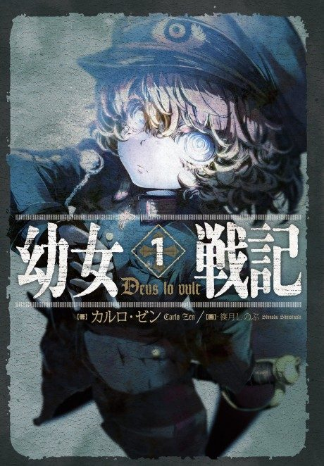

Saga of Tanya the Evil
幼女戦記
After the anime, read the light novel from Volume 11.
7.8AniList score
—Animeter, no votes yet
24episodes, 2 seasons
Filler
No filler: all 12 episodes are canon. Anime Filler List covers the first 12 of 24 episodes so far.
Episodes12
Canon12
Filler0
Mixed0
Sources: Anime Filler List